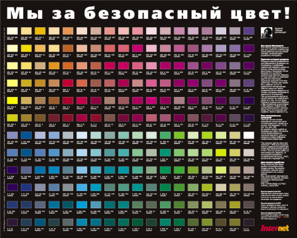

Безопасная палитра (Web Safe Colors) — это набор из 216 цветов, которые гарантированно корректно отображаются на любых мониторах и в любых браузерах без искажений.
Цвета создаются смешением красного, зеленого и синего (RGB) с использованием только 6 градаций: 0, 51, 102, 153, 204, 255 (в HEX: 00, 33, 66, 99, CC, FF), которые указывают на процентное присутствие того или иного цвета: 0, 20, 40, 60, 80 и 100%.
Шестнадцатеричный код цвета строится из этого набора, например, #FF9900.
Эта палитра полезна для обеспечения максимальной совместимости с очень старыми устройствами или при создании минималистичного дизайна.
